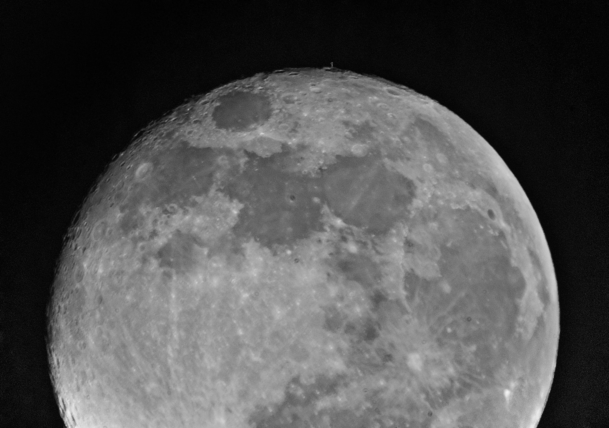

Space Stuff
Things I find beautiful about space
Children of stars
We're made of star stuff
Cosmic scales
Universe approximately 13.7 billion years old
Looking out in space means looking back in time
Shared mystery
